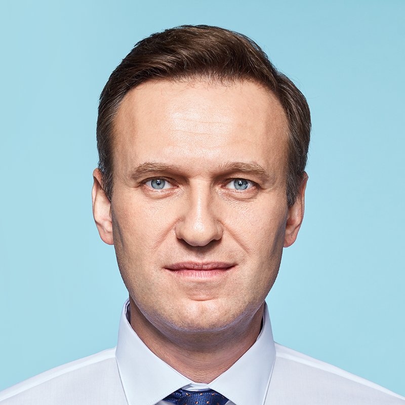

<
Союз Советских Суверенных Республик
Союз Советских Суверенных Республик
Свежие новости

ЧЕШСКАЯ АВИАКОМПАНИЯ ПОРУБИЛАСЬУКРАИНСКАЯ ССР

Трагическая гибель президента Алексея Навального в результате теракта
ЦСКА ошеломил футбольный мир
КПСС ОСУЖДАЕТ ВОЗОБНОВЛЕННЫЕ ПРИЗЫВЫ «ЕДИНОЙ РОССИИ»
НАПРЯЖЕННОСТЬ МЕЖДУ СОЮЗОМ СОВЕТСКИХ Суверенных РЕСПУБЛИК И ОБЪЕДИНЕННОЙ РЕСПУБЛИКОЙ БАЛТИЯ